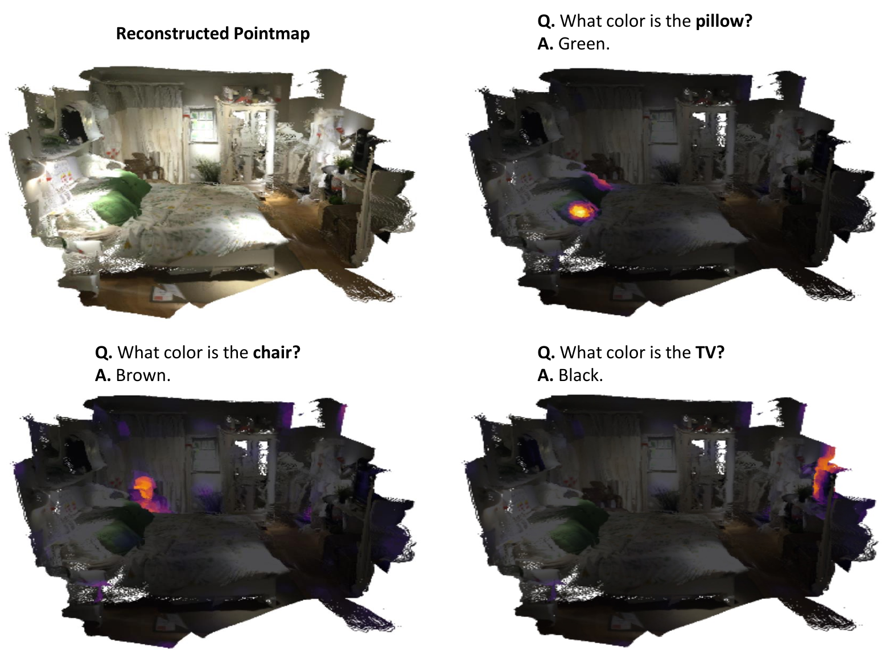
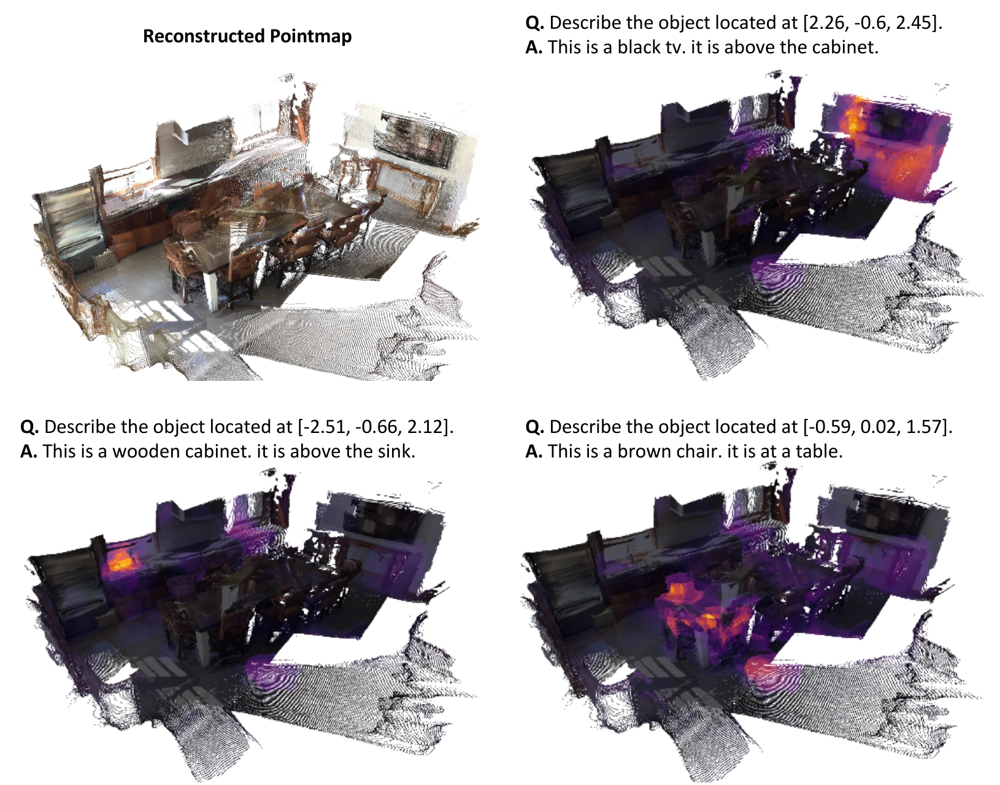

Precise spatial understanding from multi-view images remains a fundamental challenge for Multimodal Large Language Models (MLLMs), as their visual representations are predominantly semantic and lack explicit geometric grounding. While existing approaches augment visual tokens with geometric cues from visual geometry models, their MLLM is still required to implicitly infer the underlying 3D structure of the scene from these augmented tokens, limiting its spatial reasoning capability. To address this issue, we introduce Cog3DMap, a framework that recurrently constructs an explicit 3D memory from multi-view images, where each token is grounded in 3D space and possesses both semantic and geometric information. By feeding these tokens into the MLLM, our framework enables direct reasoning over a spatially structured 3D map, achieving state-of-the-art performance on various spatial reasoning benchmarks.
TL;DR: We build an explicit 3D memory from multi-view images so that VLMs can directly reason over
structured 3D representations, instead of implicitly inferring spatial structure from redundant visual tokens.
A recurrent framework that incrementally builds a structured 3D map from multi-view images, progressively integrating new observations into a unified spatial representation.
Unlike prior methods that assign identical 3D coordinates to overlapping view tokens, Cog3DMap maintains a single token per spatial location through a principled memory update mechanism that retains, updates, and expands tokens as new views arrive.
Achieves new SOTA on VSTI-Bench (+8.7%p over previous best), VSI-Bench (+3.9%p), and competitive results on RoboFAC, all while reducing visual tokens by up to 90.2% on long-horizon sequences.
Combines semantic features from the MLLM's vision encoder with geometric features from a pretrained Point3R model, creating spatially grounded tokens that enable precise distance estimation, object localization, and spatial relationship reasoning.
Without explicit spatial supervision, Cog3DMap learns to attend to spatially coherent 3D clusters around queried locations, demonstrating genuine 3D spatial understanding.

ScanQA style queries. Cog3DMap attends to query-relevant tokens without explicit supervision.

Scan2Cap validation sample. Cog3DMap assigns high attention to visual tokens corresponding to the generated answer.
| Model | Avg. | Cam-Obj. Dist. | Cam. Displce. | Cam. Mov. | Obj-Obj. Pose | Cam-Obj. Dist. |
|---|---|---|---|---|---|---|
| Random | - | - | - | 36.1 | 50.0 | 36.1 |
| Human Level† | 77.0 | 51.4 | 46.8 | 95.1 | 97.5 | 94.3 |
| Proprietary Models (API) | ||||||
| Gemini-1.5-Flash | 32.1 | 28.5 | 20.9 | 24.4 | 52.6 | 33.9 |
| GPT-4o | 38.2 | 29.5 | 23.4 | 37.3 | 58.1 | 42.5 |
| Open-source Models | ||||||
| LongVILA-8B | 30.5 | 20.0 | 11.6 | 35.4 | 52.3 | 33.4 |
| LongVA-7B | 32.3 | 13.5 | 5.1 | 43.7 | 57.9 | 41.2 |
| VILA-1.5-8B | 37.3 | 30.1 | 27.3 | 42.2 | 50.4 | 36.7 |
| LLaVA-NeXT-Video-7B | 40.0 | 28.2 | 1.8 | 49.8 | 64.7 | 55.6 |
| LLaVA-OneVision-7B | 41.7 | 29.9 | 19.3 | 47.5 | 62.1 | 49.8 |
| InternVL2-8B | 43.5 | 32.9 | 13.5 | 48.0 | 68.0 | 55.0 |
| Spatial-Enhanced Models | ||||||
| VLM-3R-7B | 58.8 | 39.4 | 39.6 | 60.6 | 86.5 | 68.6 |
| Cog3DMap-8B (Ours) | 67.5 | 40.9 | 47.1 | 88.1 | 90.9 | 70.6 |
Performance comparison on VSTI-Bench (joint spatial-temporal understanding). Cog3DMap achieves strong performance on spatial reasoning and camera movement prediction, encoding both geometric and temporal cues within a unified 3D representation.
| Model | Avg. | Obj. Count | Abs. Dist. | Obj. Size | Room Size | Rel. Dist. | Rel. Dir. | Route Plan | Appr. Order |
|---|---|---|---|---|---|---|---|---|---|
| Random | - | - | - | - | - | 25.0 | 36.1 | 28.3 | 25.0 |
| Human Level† | 79.2 | 94.3 | 47.0 | 60.4 | 45.9 | 94.7 | 95.8 | 95.8 | 100.0 |
| Proprietary Models (API) | |||||||||
| GPT-4o | 34.0 | 46.2 | 5.3 | 43.8 | 38.2 | 37.0 | 41.3 | 31.5 | 28.5 |
| Gemini-1.5-Flash | 42.1 | 49.8 | 30.8 | 53.5 | 54.4 | 37.7 | 41.0 | 31.5 | 37.8 |
| Gemini-1.5-Pro | 45.4 | 56.2 | 30.9 | 64.1 | 43.6 | 51.3 | 46.3 | 36.0 | 34.6 |
| Open-source Models | |||||||||
| VILA-1.5-8B | 28.9 | 17.4 | 21.8 | 50.3 | 18.8 | 32.1 | 34.8 | 31.0 | 24.8 |
| LLaVA-OneVision-7B | 32.4 | 47.7 | 20.2 | 47.4 | 12.3 | 42.5 | 35.2 | 29.4 | 24.4 |
| InternVL2-8B | 34.6 | 23.1 | 28.7 | 48.2 | 39.8 | 36.7 | 30.7 | 29.9 | 39.6 |
| LLaVA-NeXT-Video-7B | 35.6 | 48.5 | 14.0 | 47.8 | 24.2 | 43.5 | 42.4 | 34.0 | 30.6 |
| Spatial-Enhanced Models | |||||||||
| VG-LLM-4B | 47.3 | 66.0 | 37.8 | 55.2 | 59.2 | 44.6 | 45.6 | 33.5 | 36.4 |
| Spatial-MLLM-4B | 48.4 | 65.3 | 34.8 | 63.1 | 45.1 | 41.3 | 46.2 | 33.5 | 46.3 |
| VG-LLM-8B | 50.7 | 67.9 | 37.7 | 58.6 | 62.0 | 46.6 | 40.7 | 32.4 | 59.2 |
| 3DRS-7B | 45.9 | 68.7 | 34.8 | 53.6 | 56.6 | 40.9 | 43.2 | 30.4 | 39.2 |
| VLM-3R-7B | 60.9 | 70.2 | 49.4 | 69.2 | 67.1 | 65.4 | 80.5 | 45.4 | 40.1 |
| VST-7B | 61.2 | 71.6 | 43.8 | 75.5 | 69.2 | 60.0 | 55.6 | 44.3 | 69.2 |
| Cog3DMap-8B (Ours) | 65.1 | 69.6 | 54.8 | 67.8 | 67.1 | 64.8 | 85.6 | 43.0 | 67.9 |
Results on VSI-Bench (multi-view spatial scene understanding). Cog3DMap achieves state-of-the-art overall performance, particularly on absolute distance, relative direction, and appearance order.
1st 2nd 3rd
Results on RoboFAC (Robotic Failure Analysis and Correction) benchmark across short, medium, and long task horizons. Cog3DMap achieves competitive accuracy while reducing visual tokens by up to 90.2%.
RoboFAC input video
Cog3DMap reconstruction
@article{gwak2025cog3dmap,
title = {Cog3DMap: Multi-View Vision-Language Reasoning with 3D Cognitive Maps},
author = {Chanyoung Gwak and Yoonwoo Jeong and Byungwoo Jeon and Hyunseok Lee and Jinwoo Shin and Minsu Cho},
journal = {arXiv preprint arXiv:2603.23023},
year = {2025}
}